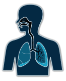
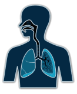
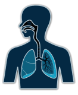

Inicio
Práctica
Evaluación
Contactos

Sistema
electronico mecánico
programable
que permite simular
la reanimación cardiopulmonar
Leonardo Carrillo, Antonio Lázaro, Héctor Yax, Emanuel Jiguan, Jordi Rodas
 
